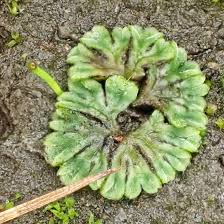

Ricciaceae
Crystalwort Family
Ricciaceae is a family of complex thalloid liverworts (division Marchantiophyta), primarily comprising the large genus Riccia. They typically form small rosettes or ribbons on damp soil or, in some cases, float on water. Unlike Marchantiaceae, they lack specialized reproductive stalks (gametangiophores) and gemma cups, and their sporophytes are highly reduced and remain embedded within the thallus.
Overview
Ricciaceae is a significant family within the order Marchantiales (complex thalloid liverworts). It is dominated by the large genus Riccia, which contains most of the family's 150-200 species, along with the distinct aquatic genus Ricciocarpos. Members of the family are found worldwide (cosmopolitan), inhabiting a range of environments from damp soil and rocks to ephemeral pools and permanent bodies of water.
These liverworts typically form small, flattened rosettes or dichotomously branching ribbons. While possessing internal air chambers like other Marchantiales, their structure is often simpler than in Marchantia. Key distinguishing features of the family include the absence of stalked gametangiophores (antheridia and archegonia are embedded directly in the thallus) and the highly reduced sporophyte, which consists only of a capsule embedded within the gametophyte tissue, lacking a foot and seta. Spores are released only upon the decay of the surrounding thallus.
Some species, like Riccia fluitans and Ricciocarpos natans, are well-known aquatic plants often used in aquariums.
Quick Facts
- Scientific Name: Ricciaceae
- Common Name: Crystalwort family
- Notable Genera: Riccia, Ricciocarpos
- Number of Species: Approximately 150-200
- Distribution: Cosmopolitan
- Evolutionary Group: Bryophytes - Liverworts (Marchantiophyta) - Marchantiopsida - Marchantiales
Key Characteristics
Gametophyte (Thallus)
The dominant gametophyte is a thallus, typically small, flattened, and dichotomously branched, often forming rosettes on soil or floating mats (Ricciocarpos).
- Internal Structure: Possesses internal air chambers, but these are often less organized than in Marchantia, and the overlying pores are typically simple, not barrel-shaped. Photosynthetic tissue lines the chambers or forms a dorsal layer.
- Ventral Surface: Bears unicellular rhizoids (smooth and/or pegged) and often ventral scales (conspicuous in Ricciocarpos, less so in Riccia).
- Asexual Reproduction: Lacks the specialized gemma cups found in Marchantia; fragmentation or tubers may occur in some species.
- Cellular Features: Cells contain multiple small chloroplasts and oil bodies.
Reproductive Structures (Gametangia)
Plants are monoicous or dioicous. Gametangia are not borne on specialized stalks (gametangiophores). Instead, they are sunken in pits or grooves along the dorsal midline of the thallus, often surrounded by slightly raised tissue.
- Antheridia: Embedded individually or in groups in dorsal cavities.
- Archegonia: Embedded individually in dorsal cavities, with only the neck protruding slightly.
Fertilization requires a film of water for sperm to swim from antheridia to archegonia.
Sporophyte
The sporophyte generation is extremely reduced and represents a key diagnostic feature of the family:
- Structure: Consists essentially only of a spherical capsule (sporangium) containing spores (and sometimes rudimentary elaters/nurse cells).
- Foot and Seta: Absent or negligible.
- Position: The sporophyte remains embedded within the gametophyte thallus throughout its development, surrounded by the enlarged archegonial venter (calyptra). It is never elevated above the thallus surface.
- Nutrition: Entirely dependent on the surrounding gametophyte tissue.
- Dehiscence: Passive; the capsule wall breaks down, and spores are released only upon the decay and disintegration of the surrounding gametophyte thallus tissue.
Spores and Elaters
Produced within the embedded capsule:
- Spores: Typically relatively large, tetrahedral (with a trilete scar), and often heavily and distinctively ornamented (reticulate, spiny, ridged), useful for species identification.
- Elaters: True elaters with spiral thickenings are generally absent. Sterile "nurse cells" may be present among the spores but lack the characteristic structure and function of elaters found in families like Marchantiaceae.
Cellular and Chemical Features
Presence of oil bodies. Multiple chloroplasts per cell. Lack complex conducting tissues. The highly reduced sporophyte and lack of specialized gametangiophores are key evolutionary modifications.
Field Identification
Identifying Ricciaceae relies on recognizing the small, often rosette-forming thallus, the absence of gemma cups and gametangiophores, and understanding that the sporophytes are hidden within the thallus.
Primary Identification Features
- Small Thalloid Gametophyte: Often forming rosettes or dichotomously branched ribbons on soil, or floating (Ricciocarpos).
- Absence of Gemma Cups: No cup-like structures for asexual reproduction on the dorsal surface.
- Absence of Stalked Gametangiophores: No umbrella-like or disc-like reproductive stalks. Gametangia sunken in dorsal groove.
- Sporophytes Embedded: Not visible externally as capsules on stalks; spores released upon thallus decay.
- Air Chambers/Pores Present: Internal differentiation visible (may need lens), but pores usually simple.
Secondary Identification Features
- Habitat: Damp soil (often ephemeral habitats) or aquatic.
- Ventral Scales: Present, especially conspicuous in Ricciocarpos.
- Oil Bodies in Cells: Microscopic liverwort feature.
- Large, Ornamented Spores: Microscopic feature.
- Elaters Absent or Rudimentary: Microscopic feature.
Seasonal Identification Tips
Observation depends on moisture:
- Gametophyte: Visible primarily during moist periods; many terrestrial species are ephemeral, disappearing during dry seasons. Aquatic species are present when water is available.
- Reproductive Structures: Gametangia are embedded and inconspicuous. Sporophytes develop internally and are not externally visible until the thallus decays, making seasonal observation difficult. Spore release coincides with thallus breakdown.
Common Confusion Points
Ricciaceae can be confused with:
- Marchantiaceae: Distinguished by the presence of gemma cups and stalked gametangiophores in Marchantia.
- Other Complex Thalloid Liverworts (e.g., Aytoniaceae, Oxymitraceae): These families typically have more complex pores and/or possess gametangiophores (though sometimes short or sessile) and exserted sporophytes with foot/seta.
- Simple Thalloid Liverworts: Lack the internal air chambers and pores characteristic of Ricciaceae and other Marchantiales.
- Hornworts: Possess horn-like sporophytes and lack oil bodies.
- Algae (esp. floating forms): Lack the organized thallus structure, rhizoids/scales, and internal differentiation of Ricciaceae.
Field Guide Quick Reference
Look For (Gametophyte):
- Small, flat thallus (often rosettes)
- Dichotomously branched
- Air pores/chambers present
- NO gemma cups
- NO stalked gametangiophores
- Ventral scales/rhizoids
Look For (Sporophyte & Spores):
- Sporophyte embedded in thallus (invisible)
- No foot or seta
- Spores released by thallus decay
- Elaters absent or rudimentary (microscopic)
Notable Examples
The family includes both terrestrial and aquatic species, primarily in the genus Riccia.

Riccia fluitans
Floating Crystalwort / Slender Riccia
A cosmopolitan aquatic species often found floating in tangled masses in ponds and slow streams, or sometimes stranded on mud. The thallus consists of narrow, repeatedly dichotomously branched ribbons. It rarely produces sporophytes in the floating form. Popular aquarium plant.

Ricciocarpos natans
Fringed Heartwort / Purple-fringed Riccia
The sole species in its genus, found floating in nutrient-rich still waters worldwide. The gametophyte is heart-shaped or fan-shaped, green on top, with conspicuous long, purplish ventral scales hanging underneath. It can also grow terrestrially, forming rosettes. Sporophytes are embedded.

Riccia sorocarpa
(Common Crystalwort)
A common terrestrial species found on bare soil in fields, paths, and disturbed ground worldwide. It forms small, greyish-green rosettes. The thallus tips are often pointed and thickened. Sporophytes are embedded within the thallus along the dorsal groove.
Phylogeny and Classification
Ricciaceae is a well-defined family within the order Marchantiales (Class Marchantiopsida). Molecular studies place it firmly within this order, often grouping it with families like Oxymitraceae. While traditionally viewed as potentially "primitive" due to the simple sporophyte, molecular data suggests this reduced sporophyte is likely a derived condition (an evolutionary simplification) within the Marchantiales, rather than an ancestral state.
The family represents a significant radiation, especially the genus Riccia, into diverse habitats, including ephemeral terrestrial niches and aquatic environments. The adaptations seen in Ricciocarpos for a floating aquatic lifestyle are particularly notable.
Position in Plant Phylogeny
- Kingdom: Plantae
- Clade: Embryophytes (Land Plants)
- Division: Marchantiophyta (Liverworts)
- Class: Marchantiopsida
- Order: Marchantiales
- Family: Ricciaceae
Evolutionary Significance
Ricciaceae is significant for:
- Sporophyte Reduction: Provides a striking example of extreme reduction in the sporophyte generation within land plants.
- Adaptation to Ephemeral Habitats: Many Riccia species are adapted to survive in temporary damp conditions, completing their life cycle quickly.
- Aquatic Adaptation: Shows the transition to a floating aquatic lifestyle in Riccia fluitans and Ricciocarpos natans.
- Diversity within Marchantiales: Represents a major lineage within the complex thalloid liverworts with unique reproductive modifications.